Devlogs BinkyCraft is a sandbox style that loosely inspire by Minecraft. My version is just a lot better. In my opinion. My version will also focus a lot more on building, since that's what I personally enjoy more. I'm also just making all this for fun.

Devlog Update One - The Start
Find out how the game looked when I decided I wanted to start making these devlogs. The game is quite a bit different than where it is now.
Learn More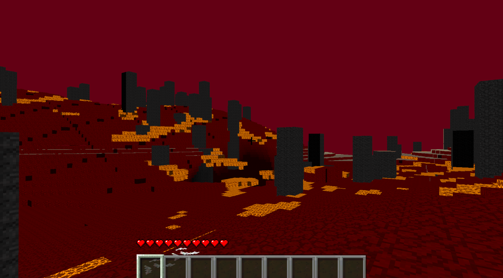
Devlog Update Two - The Inferno Realm
The Inferno Realm is a new dimension to travel and explore.
Learn More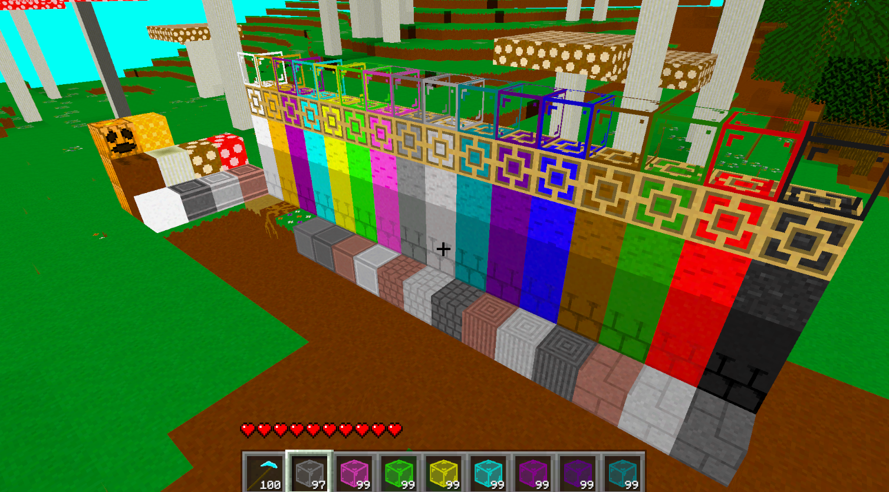
Devlog Update Three - Blocks
Check out all these new blocks being added into the game. There is a lot of them.
Learn More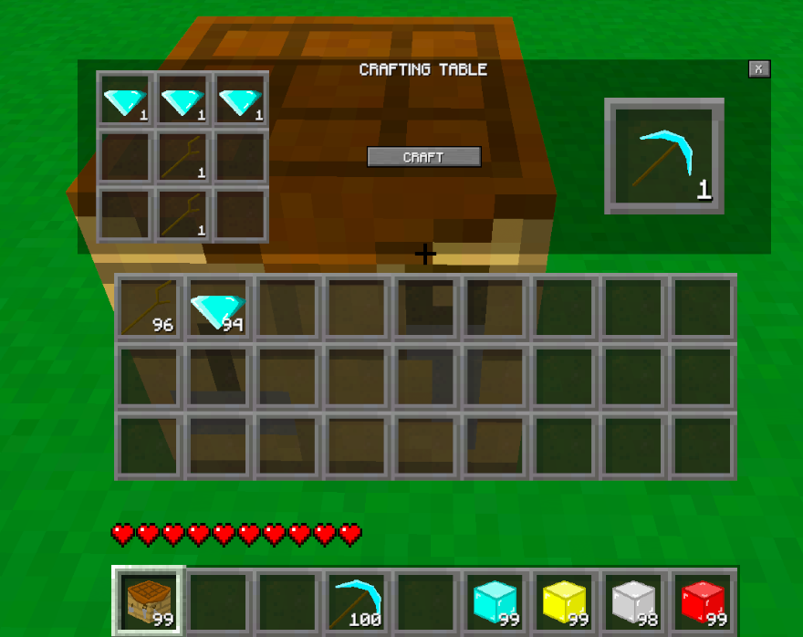
Devlog Update Four - Crafting
The player can now craft items and blocks. That's pretty cool, right?
Learn More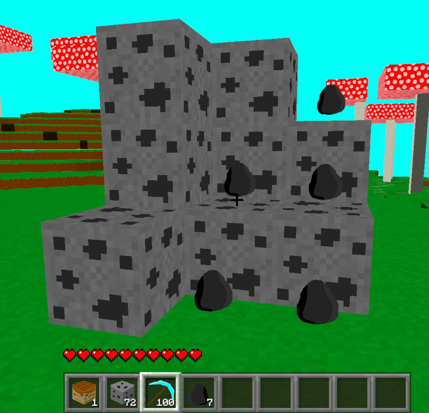
Devlog Update Five - Basic Game Systems
The player can now chop wood, craft pickaxe, and mine diamonds. Basically a full game already.
Learn More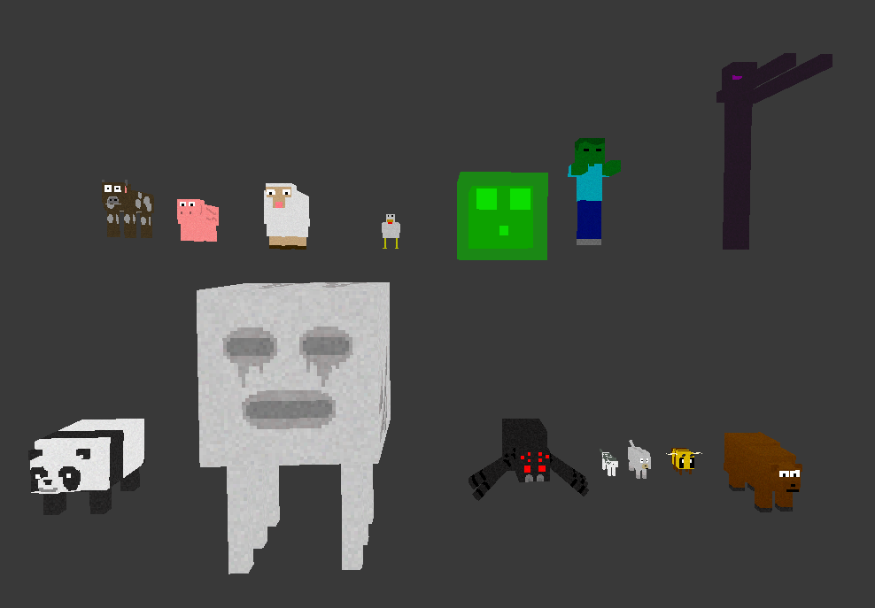
Devlog Update Six - Enemies and Mobs
Just a big step towards fully adding these into the game.
Learn More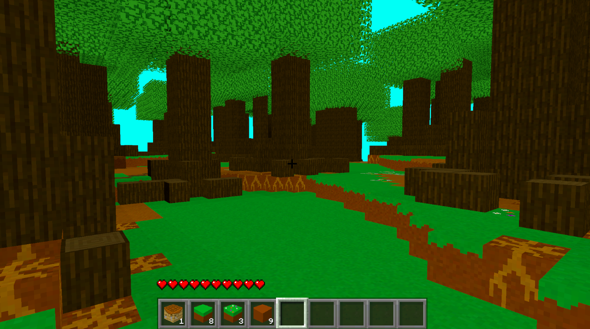
Devlog Update Seven - Progress
Yah, this update is just a dump load of work being down on the game.
Learn More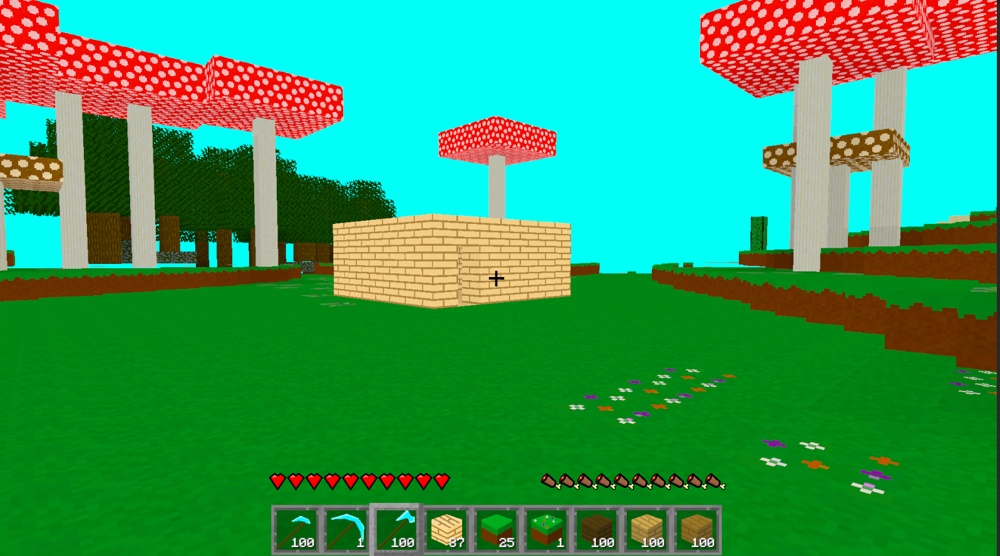
Devlog Update Eight - UI and Saving
The game now looks a little different with some UI work being done. Oh, and the player can now fully save the game. So, that's cool.
Learn More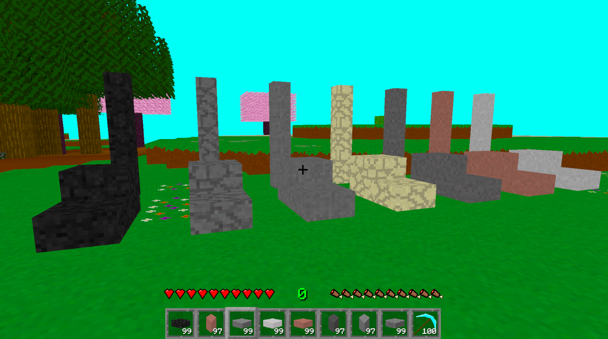
Devlog Update Nine - Stairs and Slabs
Now not everything in the game is a complete block. The builders better be thankful.
Learn More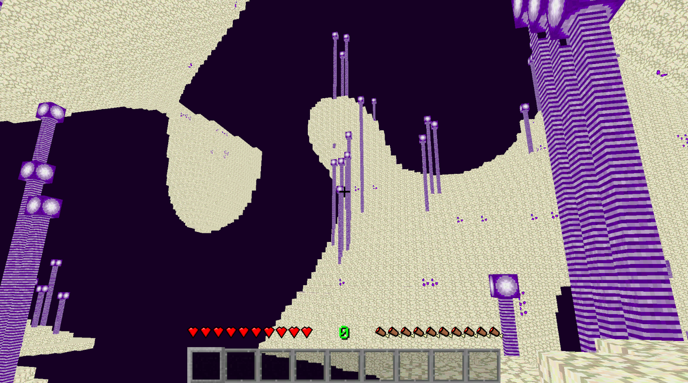
Devlog Update Ten - The Void Realm
Come and explore the second new dimension added into the game. This one is even more extreme than the last.
Learn More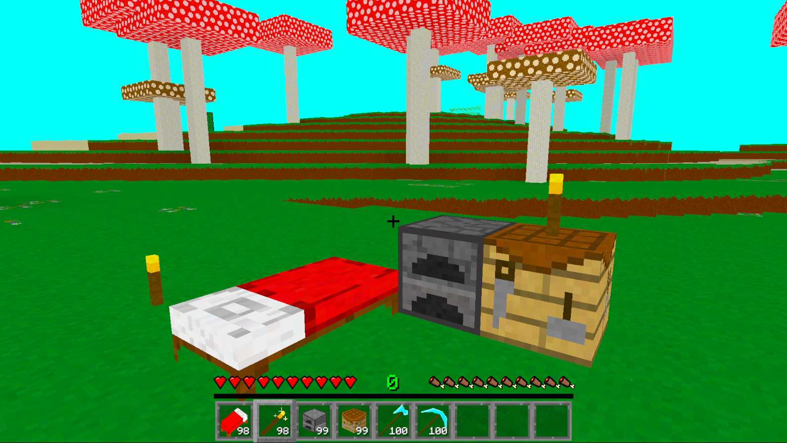
Devlog Update Eleven - Player Experience
This update was made to make the player's experience during gameplay feel a lot more complete and better.
Learn More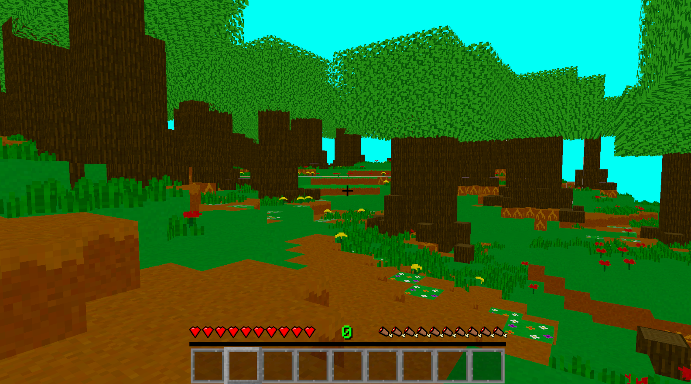
Devlog Update Twelve - Progress Part 2
Just me doing a bunch of random progress side quests in the game. Just doing a lot of weird little things that need to be done.
Learn More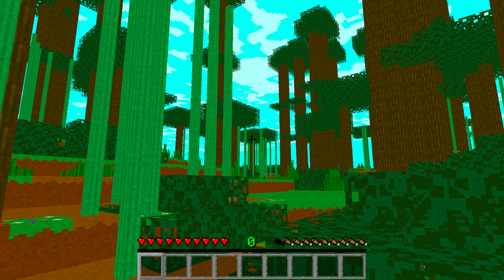
Devlog Update Thirteen - Biomes
The biomes in the game need a lot of work. Let's fix that. And add a bunch of biome stuff.
Learn More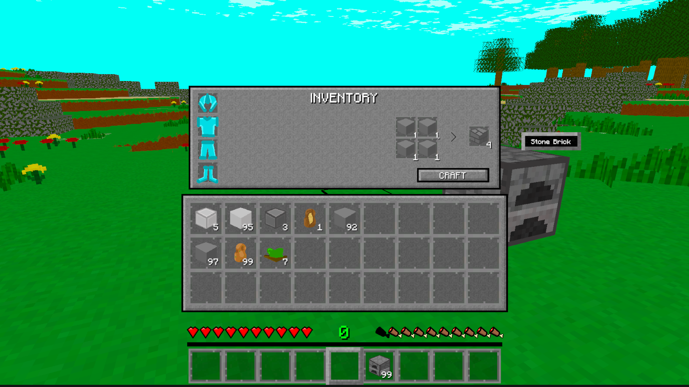
Devlog Update Fourteen - Useful UI
Some of the items in the game now have more and better UI.
Learn More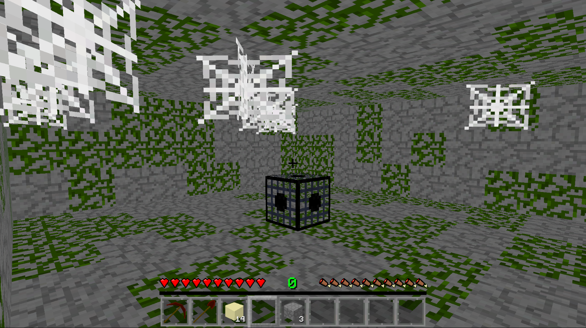
Devlog Update Fifteen - Enemies and Mobs Part 2
The player can now encounter mobs and enemies naturally in the game.
Learn More